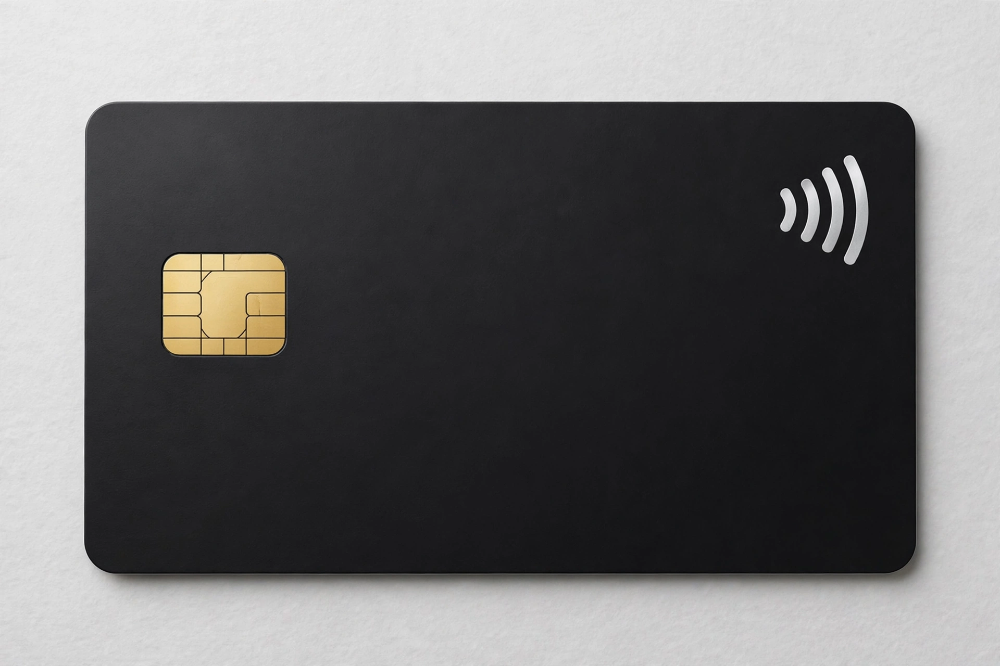

A credit card is a payment card, usually issued by a bank, allowing its users to purchase goods or services or withdraw cash on credit. Using the card creates a revolving account and grants the cardholder a line of credit, from which the cardholder can borrow money for payment to a merchant or as a cash advance. A credit card is different from a charge card, which requires the balance to be repaid in full each month, and from a debit card, which draws on deposited funds.

Early charge coins and department-store cards preceded the 1950 Diners Club card. Bank of America's BankAmericard (1958), championed organisationally by Dee Hock into Visa, and the Interbank Card (Mastercard) created general-purpose revolving cards. Magnetic stripes, then EMV chips and contactless and mobile payments, followed.
Issuers approve transactions, merchants' acquirers pay issuers minus interchange fees, and cardholders repay monthly; balances carried beyond the grace period incur interest (APR), while rewards and cashback — pioneered at scale by the Discover Card — are funded largely by interchange and interest.
Laws such as the U.S. Truth in Lending Act and CARD Act of 2009 mandate disclosures and limit certain fees. Benefits include convenience, credit-history building and fraud protections; risks include high interest debt and overspending.